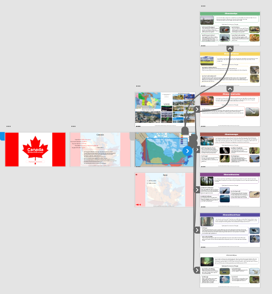
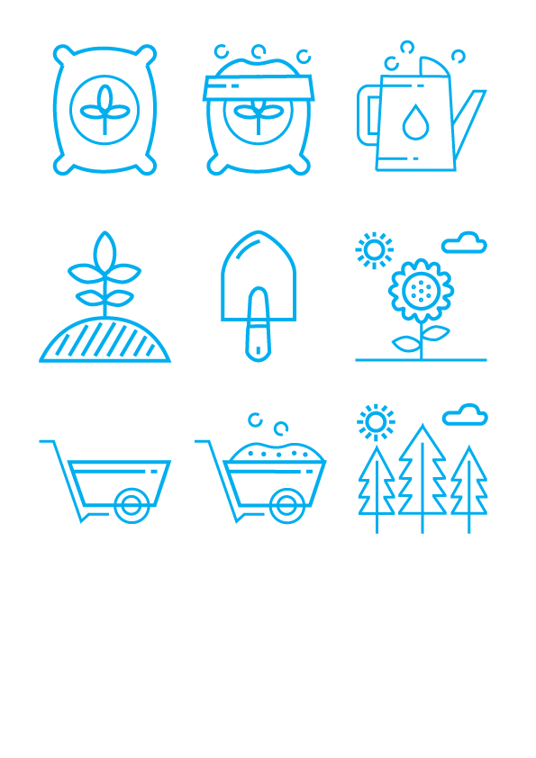
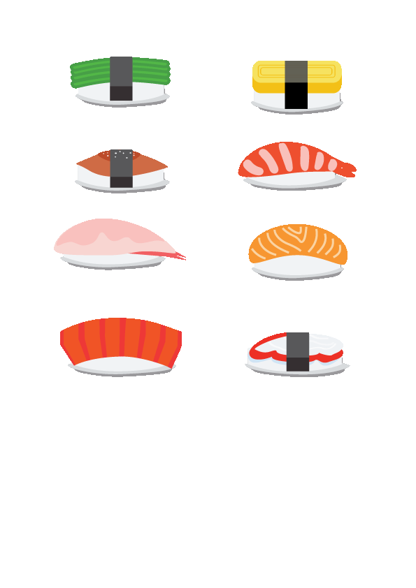
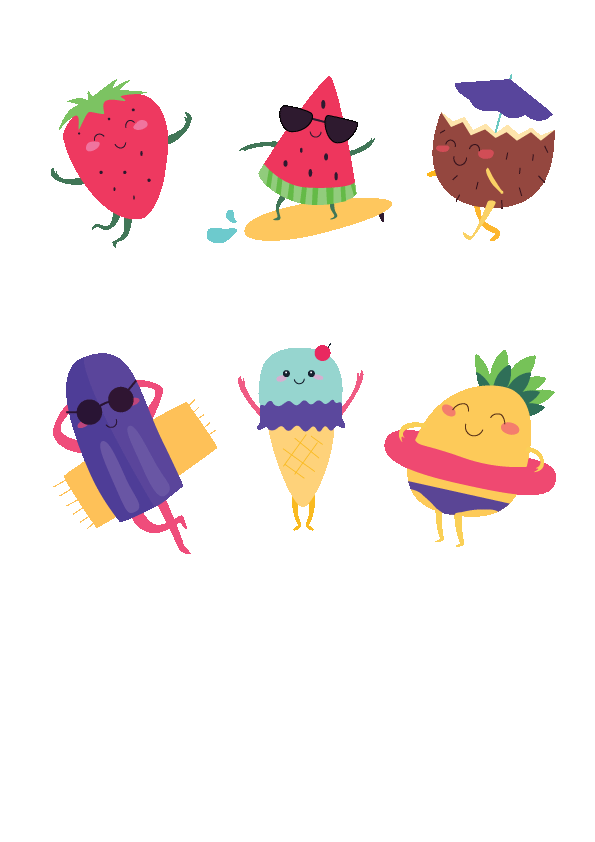
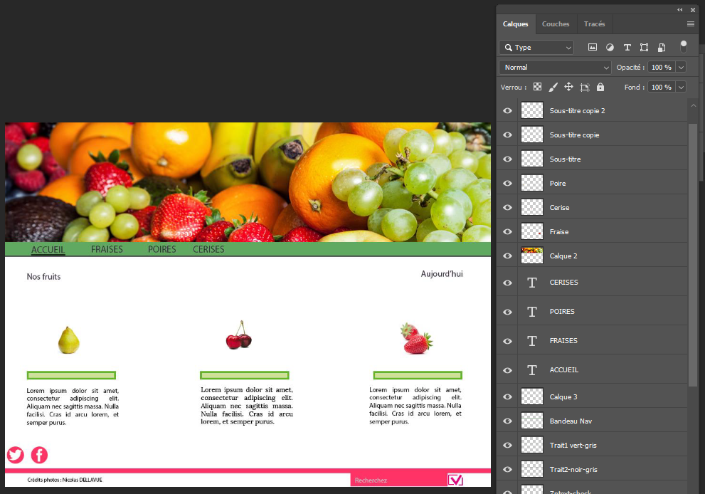

Voici une page de présentation des différents sites que j'ai créé lors de mes formations en tant que Designer Web et Développeur Web.
Dans le cadre de ma formation "Web Designer", j'ai été ammené à créer plusieurs petits sites internet.
Vous pouvez les consulter en cliquant sur les liens ci-dessous.
-
Blanco : Site d'une seule page pour travailler sur les "Flexbox"
-
ParadiGm : Site d'une seule page pour travailler sur le "Responsive"
-
Yoast : Site d'une seule page pour travailler sur le "Responsive" et menu "burger"
-
Expo Maëlle : Site de plusieurs pages avec des techniques différentes réalisé pour ma fille dans le cadre d'un exposé pour sa classe de CM1
-
Waïfu : Site de plusieurs pages en cours d'évolution destiné à fabriquer un "thème" pour Wordpress (réalisé pour mon fils musicien)
-
Fruits : Site d'une seule page à titre d'examen blanc avec utilisation d'Illustrator, Photoshop. Puis montage et publication du site
-
Marmite Examen blanc : Site d'une seule page à titre d'examen blanc avec utilisation d'Illustrator, Photoshop. Puis montage et publication du site.
Site réalisé avec WordPress
-
Le Libanais : remodelage d'un site à partir d'un existant. [Site Original]
-
Fitness : remodelage d'un site à partir d'un existant. [Le site n'existe plus]
-
Waïfu : transformation d'un site en thème WordPress.
Site réalisé avec Symfony 5.1
-
SymBNB : Création d'un site de réservation de logement de vacances
-
Optim'hum Eval : Création d'un site pour optim'hum afin de saisir les évaluations par les stagiaires
Différents outils de préparation des Design
-
Adobe XD pour le site Expo_maelle
 -
Adobe Illustrator: Création de petits icones
   -
Adobe Photoshop

Voici une description rapide de ma carrière
Après une formation de "technicien de maintenance informatique", j'ai rapidement évolué vers un poste d'installeur puis de développeur C (Unix). 5 ans plus tard dans cette entreprise, j'ai pris la direction du service maintenance Soft & Hard.
Suite à mon départ de la région parisienne, je suis devenu développeur multimédia (fin des années 90). J'ai eu la chance de participer à la création d'un CD-Rom sur Jules Verne avec son petit fils (Jean Jules Verne) et d'un autre sur le Palais des Papes d'Avignon
Après un formation en entreprise comme développeur visual Foxpro, j'ai continué ma carrière de développeur Foxpro chez Soram Vitacroc en créant un ERP dédié (en solo) ainsi que le site internet de l'entreprise. Je suis devenu le responsable informatique de l'entreprise.
Suite à ma séparation de Soram, j'ai suivi une formation diplomante de Designer Web et Développeur Web. Cela m'a permis de me remettre à niveau dans certains domaines, d'apprendre de nouvelles techniques et de nouveaux langages de programmation Web.
Voici mon CV "Développeur Designer Web"
Voici mon CV "Administrateur réseau"
Complément Optim'hum
En plus de la formation Optim'hum, j'ai été ammené par mes professeurs à suivre des formations complémentaires. Elles ont été suivies sur les sites suivants:
Voici au 08/06/2020 l'etat d'avancement